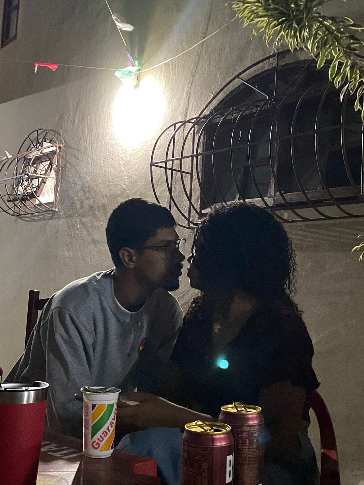

MOTIVOS DE EU TE AMAR
Página de adoração para minha mulher Alessandra da Conceição Francisco
(relaxa que só eu e voce sabemos o link dessa página isso daqui vai ser um bglh só meu e seu)
obs: Essa é sua surpresa de Dia dos Namorados mas vou ficar atualizando ele depois tambem
1. Sorriso
Assim como nessa linda foto abaixo, seu sorriso é desparadamente a coisa mais linda dessa foto, até a formação certinha dos seu dentes me deixam apaixonado
obs: Maria puxou seu sorriso
O jeito que você me olha

Eu sei que voce não gosta dessa foto mas lembro do jeito que voce me olha e fico todo bobo, amo essa foto
A forma que voce sempre me leva a ser uma pessoa melhor e evoluir
(Nós dois caminhando pra um futuro perfeito juntos)
Essas fotos antigas suas
Aqui você estava simulando como se vestiria para o nosso casamento
Essas duas eu gosto muito, não sei pq, só fico feliz de olhar pra suas fotinhas e perceber que se eu te conhecesse criança me apaixonaria do mesmo jeito
Seus olhos
Eu amo minha japonega, vc é muito linda amor, amo o quão puxadinho seu olho é
complementando ele fica mais bnt ainda quando você sorri
Sua Familia
Já disse algumas vezes mais acho que junto com a melhor namorada do mundo veio uma Familia que me acolheu como parte dela desde o início só tenho a agradecer por isso
Só um adendo: esse site está com esse visual não muito bom comparado com outros sites pq eu decidi criar do 0 a base da programação e não pegar algum aplicativo de fazer sites genéricos, ai peguei pra estudar uma linguagem de programação justamente p fazer isso pra ti, mas enquanto eu vou estudando e evoluindo sobre criar sites eu vou melhorando o meu presente pra você no futuro
Voltando...